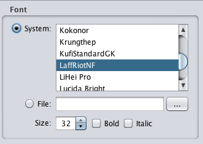
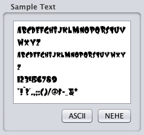
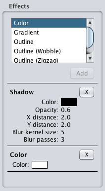
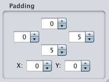
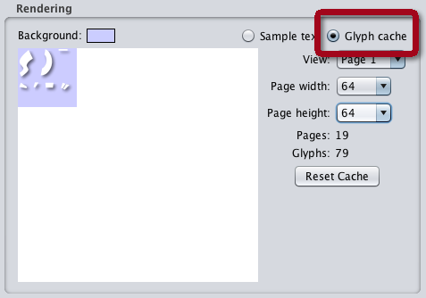
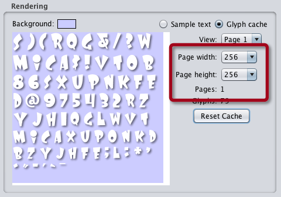
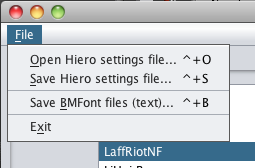
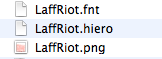

Creating Fonts with Hiero(Based on a tutorial at http://www.learn-cocos2d.com/)
Select a font  First you must select a font. You can choose from those installed on your system, or choose the "File" option and select a file on your harddrive. This is also where you will set the size (in pixels) of the font, and can make it bold or italic. Note: if you suddenly don't see any characters in the Rendering view anymore, save your Hiero settings and restart Hiero. This problem occurs most often when cycling through a lot of fonts in this list. Create your character set  In the Sample Text view, enter only the characters you really need to have in your bitmap font. The ASCII button will produce the full standard ASCII character set, and the NEHE button will produce a list of the most common characters you will use, as found in many NEHE tutorials. If you don't go with either the ASCII or NEHE sets, be sure not to forget to include the space character. Apply effects  Apply any effects to the font as needed. Here I've added the Shadow and Color effects. Note: I had to remove the existing Color effect, then add Shadow and Color again in order to actually add the Shadow to the background. Effects are drawn in order. Drawing the Shadow first, then Color (which will draw the font), creates the desired effect with a green shadow. The other way around may not look so good. Unfortunately you can't re-order effects without removing and re-adding them. Adjust Padding (optional)  If you added any effect which increases the font's size you may have to pad each character so that they have more space in between them. Otherwise you'll see artifacts in your bitmap font when rendering it in-game. Tweaking the padding is a trial and error process. In most cases, 0 padding is fine. In my example, I've added a drop-shadow that blurs 5 pixels out from the character, so I've added a padding of 5 pixels to the right and bottom (since the shadow extends down and to the right). Also note that I have set the font color to white. This is generally best if you this font to appear in multiple colors throughout your game. From white, you can tint your font to any color. View the Glyph Cache  Switch the Rendering view to display the Glyph cache. Then click Reset Cache since you changed the Sample Text characters. This makes sure that only the characters currently entered in the Sample Text field are used in the font. Note how Hiero wants to create 19 pages (textures). We must get down to just one page (texture). Adjust Page settings  Change the Page width and height settings until you get down to just one Page (texture). Note: if you intend to use PVRTC compression for iOS devices, you will need the texture to be square. Otherwise, almost any combination of width and height is just fine, just try to wind up with as little wasted space as possible. Save the file  From Hiero's File menu save both the Hiero settings file (extension: .hiero) and BMFont files (extension: .fnt with accompanying .png). If you ever need to tweak it again, load the .hiero file to restore the same settings with which you've created the .fnt file. It's a good idea to name both files identically. Rename extension to .txt  Rename the .fnt file so that it has a .txt extension. This helps Unity recognize the file as a TextAsset, which is what it needs to be to be used properly. Troubleshooting If you encounter any problems with Hiero (such as the issue where output atlases are sometimes flipped vertically), please see this online troubleshooting guide for Hiero. Continue Now proceed back to the Creating Fonts page to see the next step in the "Using Fonts" section. |